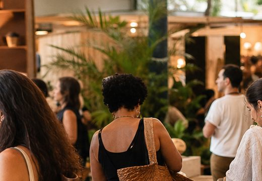

Arte em MadeiraL2 · Arte e decoração
Arte em MadeiraL2 · Arte e decoração
37ª edição · 10 anos
Feira Beco do Inferno
Um encontro de arte autoral, economia criativa e cultura independente no Centro de Sorocaba.
Formulário disponível para esta edição
Como participar
Encontre a feira, confira o edital e envie sua inscrição.
Após o envio, o expositor acompanha as etapas de formulário, fotos, curadoria e definição de espaço pela área privada.
Edital publicado
Inscrições abertas
Curadoria
Confirmação
Próxima edição
Expositores já confirmados
Relação demonstrativa publicada após a aprovação da curadoria.
Arte em MadeiraL2 · Arte e decoração Cerâmica NaturalF1 · Cerâmica
Cerâmica NaturalF1 · Cerâmica
Luz do DesignE8 · Design E4 · Moda autoralConfirmação em destaque
E4 · Moda autoralConfirmação em destaqueMapa da feira
Encontre quem você quer visitar.
Expositores confirmados recebem o mapa individual com o próprio local marcado.
Praça da feira · demonstração de ocupação2x2 e 3x3 · planta a ser fornecida pela AssociaçãoL1L2F1F8E4E8E9